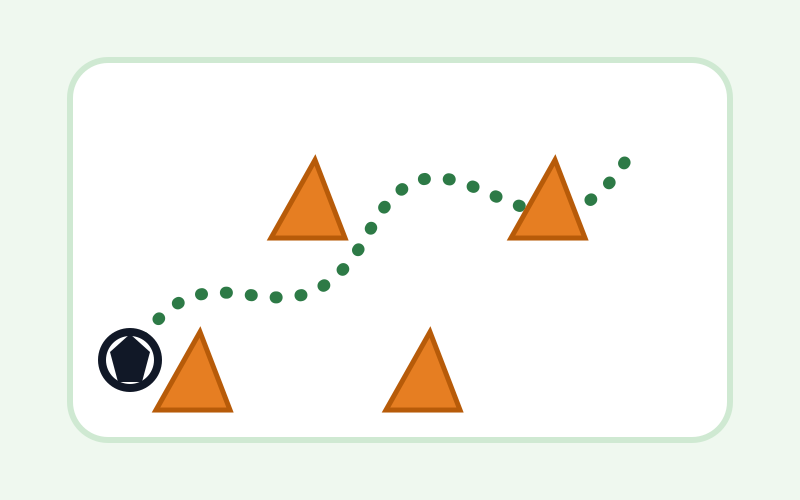
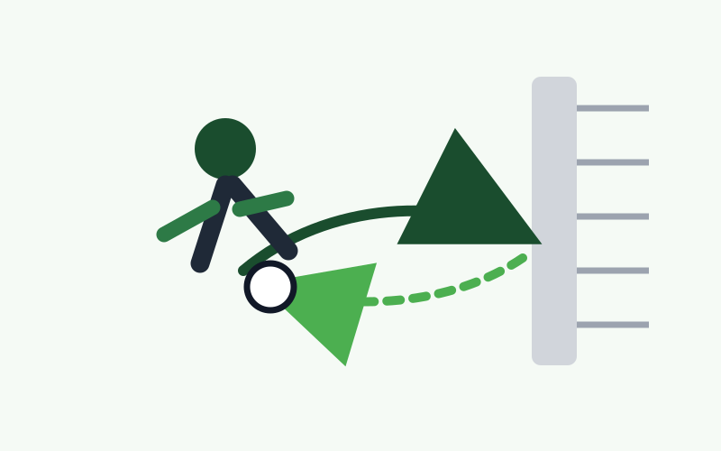
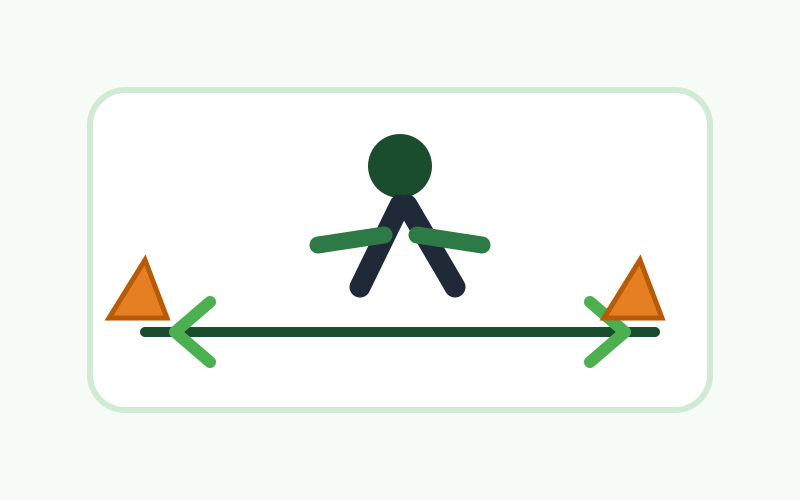
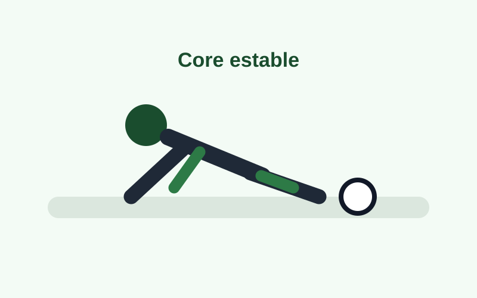
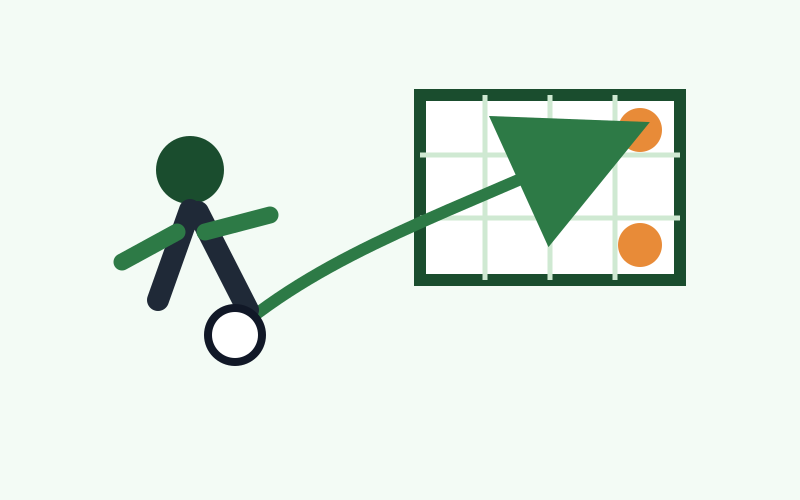
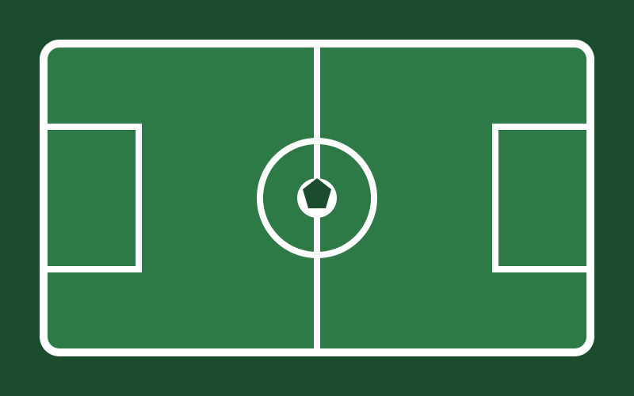
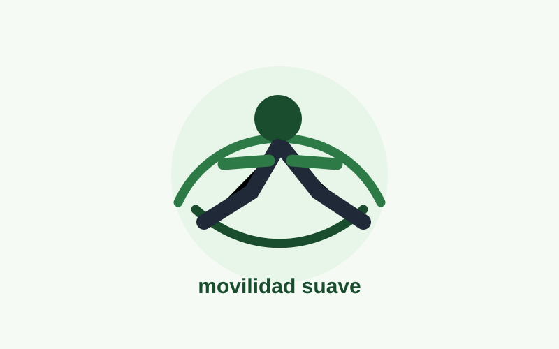
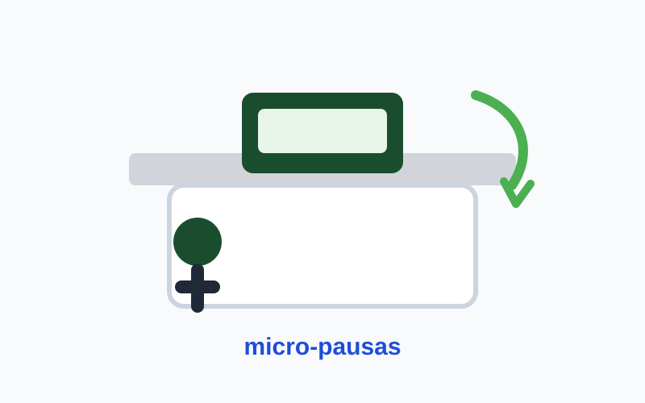

Mejorar condición física, técnica individual y toma de decisiones en futbolito.
Visión general
📌 Resumen ejecutivo del plan
El sitio pasa de ser una página informativa básica a una plataforma de planificación: muestra el propósito del entrenamiento, ordena la semana y permite revisar cada sesión sin saturar al usuario.
Semanas progresivas, con carga ajustada según fatiga y dolor.
Pensado para jugadores recreativos que quieren entrenar con método.
Cinco días con opción de cancha y dos días de recuperación/oficina.
¿Para qué sirve este plan?
Sirve para ordenar la preparación semanal de futbolito, evitando improvisar. La página permite visualizar qué entrenar cada día, cuánto tiempo dedicar, qué materiales usar y qué indicadores revisar al terminar.
Enfoque principal
Progresión técnica y física sin convertir todos los días de cancha en partidos. La idea es alternar técnica, recuperación, fuerza preventiva, táctica y simulación de juego.
Ruta de mejora
🎯 Objetivos del plan
Los objetivos se separan en dimensiones para que el entrenador pueda evaluar avances reales y no solo sensaciones generales.
Condición física
Mejorar resistencia específica, aceleraciones cortas, cambios de dirección y tolerancia a esfuerzos intermitentes.
- Completar bloques de 5–12 minutos sin caída brusca de ritmo.
- Recuperar respiración en pausas de 60–90 segundos.
Técnica individual
Aumentar seguridad en conducción, pase, control orientado, remate y uso de pierna no dominante.
- Ejecutar pases rasantes con dirección definida.
- Conducir mirando el balón y levantando la vista por momentos.
Táctica simple
Favorecer decisiones básicas de futbolito: pasar, perfilarse, dar apoyo, cerrar espacios y finalizar jugadas.
- Elegir cuándo acelerar y cuándo conservar el balón.
- Ocupar mejor los espacios reducidos.
Prevención
Integrar movilidad, core y fuerza preventiva para reducir sobrecarga de espalda baja, glúteos, rodillas y tobillos.
- Registrar dolor y fatiga después de cada sesión.
- Aplicar descarga cuando la escala de dolor lo indique.
Organización semanal
📅 Calendario semanal
La semana se organiza con cinco días posibles de cancha, pero con intensidades distintas. Tener cancha no significa entrenar fuerte todos los días.
LunesCanchaBase + conducción
MartesOficinaDescanso activo
MiércolesOficinaRecuperación
JuevesCanchaAgilidad + pase
ViernesBajaTécnica suave
SábadoFuerteRemate + juego
DomingoFlexibleSimulación/descarga
Planificación semanal base
Tabla optimizada para lectura en celular mediante desplazamiento horizontal.
| Día | Tipo | Enfoque | Duración | Intensidad | Decisión del entrenador |
|---|---|---|---|---|---|
| Lunes | Mixto | Base aeróbica, conducción y fuerza preventiva | 45–60 min | Media | Controlar técnica antes de aumentar volumen. |
| Martes | Recuperación | Descanso real y micro-pausas | 0–8 min | Muy baja | No compensar con entrenamiento extra. |
| Miércoles | Recuperación | Movilidad mínima o descanso total | 0–8 min | Muy baja | Preparar el bloque jueves-domingo. |
| Jueves | Técnico/físico | Agilidad, pase y core | 45–60 min | Media | Evitar giros bruscos si hay dolor. |
| Viernes | Técnico | Técnica suave y recuperación activa | 30–45 min | Baja | Salir mejor de lo que se llegó. |
| Sábado | Mixto | Remate, decisiones y pichanga controlada | 45–70 min | Media-alta | Concentrar intensidad de la semana. |
| Domingo | Táctico/variable | Simulación o descarga con balón | 35–60 min | Variable | Decidir según fatiga del sábado. |
🧭 Selector de etapa
Usa estos botones para visualizar el foco de cada semana. La selección queda guardada en el navegador.
Entrenamiento diario
🗂️ Sesiones de entrenamiento
Cada sesión incluye objetivo, duración, materiales, estructura, indicadores y observaciones. Puedes filtrar por tipo de trabajo.
Lunes
Mixto45–60 min
Base aeróbica + conducción + fuerza preventiva
Objetivo principal: iniciar la semana con volumen controlado, mejorar control de balón y activar musculatura protectora.
MaterialesBalón, conos/botellas, agua
Jugadores1–6
Intensidad5–6/10
Ver desarrollo completo
Calentamiento
- Movilidad articular: tobillos, rodillas, cadera y hombros.
- Activación: puente de glúteos, bird-dog y skipping suave.
- Conducción libre 2 minutos.
Parte principal
- 6–8 ciclos: conducción 45–60 s + recuperación 60 s.
- Zigzag con balón en 4–6 conos.
- Fuerza preventiva: sentadilla, zancada atrás, plancha frontal.
Vuelta a la calma
- Caminata 3 minutos.
- Flexor de cadera, piriforme y gemelos 30–40 s por lado.
Indicadores de logro
- Mantiene balón cerca del pie durante conducción.
- Termina con fatiga máxima 6/10.
- No aparece dolor lumbar o baja durante la sesión.
Observación del entrenador: priorizar postura y control. Si el jugador se desordena, disminuir velocidad antes de aumentar distancia.
Martes
Recuperación0–8 min
Descanso real + micro-pausas
Objetivo principal: permitir adaptación física y reducir rigidez por jornada de oficina.
MaterialesNinguno
JugadoresIndividual
Intensidad1–2/10
Ver desarrollo completo
Calentamiento
No aplica. Es día de descanso.
Parte principal
- Caminar 2 minutos cada 60–90 minutos sentado.
- Rotaciones de cadera y movilidad de columna.
- Respiración profunda 1 minuto.
Vuelta a la calma
Estiramiento suave si hay rigidez.
Indicadores de logro
- No aumenta fatiga.
- Disminuye sensación de rigidez.
- Llega al miércoles sin dolor acumulado.
Observación del entrenador: este día también entrena la disciplina: no hacer de más.
Miércoles
Recuperación0–8 min
Descanso total o movilidad mínima
Objetivo principal: llegar al jueves con piernas disponibles y menor carga acumulada.
MaterialesMat opcional
JugadoresIndividual
Intensidad1–2/10
Ver desarrollo completo
Calentamiento
No obligatorio.
Parte principal
- Puente de glúteos 15 repeticiones.
- Bird-dog 8 por lado.
- Movilidad 90/90 de cadera 45 s por lado.
Vuelta a la calma
Respiración nasal 60 segundos.
Indicadores de logro
- Sensación corporal más suelta.
- No termina cansado.
- Duerme y se hidrata mejor.
Observación del entrenador: preparar ropa, agua y balón para no llegar apurado al jueves.
Jueves
Físico/técnico45–60 min
Agilidad + pase + core estable
Objetivo principal: mejorar desplazamientos cortos, pase rasante y estabilidad corporal.
MaterialesBalón, conos, pared/arco
Jugadores1–8
Intensidad6–7/10
Ver desarrollo completo
Calentamiento
- Movilidad dinámica 6 min.
- Conducción suave 2 min.
- 20 pases cortos progresivos.
Parte principal
- Desplazamiento lateral 4×25 s.
- Aceleración 5 m + frenada controlada 6 reps.
- Pase a pared: 30–50 por pie.
- Core: plancha frontal/lateral y dead bug.
Vuelta a la calma
- Caminata suave.
- Estiramientos de cadera y gemelos.
Indicadores de logro
- Frena sin perder equilibrio.
- Pase rasante llega al objetivo.
- Mantiene tronco estable en core.
Observación del entrenador: evitar giros agresivos si aparece molestia de rodilla, tobillo o espalda.
Viernes
Técnico suave30–45 min
Técnica suave + recuperación activa
Objetivo principal: tocar balón sin acumular fatiga antes del fin de semana.
MaterialesBalón, conos opcionales
Jugadores1–4
Intensidad3–4/10
Ver desarrollo completo
Calentamiento
- Caminata/trote suave 3 min.
- Movilidad de cadera y tobillo.
Parte principal
- Conducción lineal y zigzag suave.
- Pases cortos a objetivo.
- Controles con planta, interior y exterior.
Vuelta a la calma
- Movilidad de cadera 8 min.
- Respiración 1 min.
Indicadores de logro
- Termina más suelto que al inicio.
- No realiza sprints ni remates fuertes.
- Controla balón sin ansiedad.
Observación del entrenador: viernes no se gana por intensidad, se gana por recuperación y calidad técnica.
Sábado
Día fuerte45–70 min
Técnica + remate + pichanga controlada
Objetivo principal: transferir técnica y condición física a situaciones reales de juego.
MaterialesBalón, arco, petos, conos
Jugadores2–12
Intensidad7–8/10
Ver desarrollo completo
Calentamiento
- Activación completa 10–12 min.
- Pases cortos y conducción progresiva.
Parte principal
- Zigzag + pase filtrado.
- Remate tras conducción corta.
- Juego reducido 3v3, 4v4 o 5v5 por bloques.
Vuelta a la calma
- Caminata 4 min.
- Estiramientos suaves y registro de fatiga.
Indicadores de logro
- Decide antes de recibir.
- Remata con postura estable.
- Respeta pausas entre bloques.
Observación del entrenador: concentrar la intensidad aquí, pero sin jugar cada pelota como si fuera la final del mundo.
Domingo
Variable35–60 min
Simulación de partido o descarga con balón
Objetivo principal: decidir la carga según el sábado: transferencia si hay energía, descarga si hay fatiga.
MaterialesBalón, conos, arco opcional
Jugadores1–10
IntensidadVariable
Ver desarrollo completo
Calentamiento
- Chequeo de fatiga y dolor 0–10.
- Movilidad y conducción suave.
Parte principal
- Opción A: simulación con intervalos si está fresco.
- Opción B: técnica baja y movilidad si el sábado fue fuerte.
- Registro semanal al finalizar.
Vuelta a la calma
- Movilidad general 6 min.
- Respiración y estiramientos suaves.
Indicadores de logro
- Elige carga según evidencia, no por impulso.
- Anota minutos, fatiga y dolor.
- Llega al lunes sin sobrecarga.
Observación del entrenador: domingo es el día inteligente. No todo progreso se mide por terminar agotado.
Componentes del rendimiento
🧩 Trabajo físico, técnico y táctico
Estas secciones explican qué se está entrenando y cómo progresar durante las ocho semanas.
Trabajo físico
Se enfoca en resistencia intermitente, agilidad, frenadas, cambios de dirección y fuerza preventiva.
Sem 1–2Adaptación, técnica lenta y control postural.
Sem 3–4Aumentar volumen de repeticiones y pausas controladas.
Sem 5–6Introducir bloques exigentes de corta duración.
Sem 7–8Transferir a juego reducido y simulaciones.
Trabajo técnico
Busca calidad de ejecución: primer control, pase rasante, conducción cercana, remate colocado y pierna no dominante.
- El pase debe llegar al objetivo con balón bajo.
- La conducción debe alternar mirada al balón y mirada al espacio.
- El remate se entrena primero colocado, luego con potencia.
Trabajo táctico
Integra decisiones simples de futbolito: apoyar, pasar y moverse, cerrar línea de pase y finalizar cuando hay ventaja.
- Antes de recibir: mirar dónde está el compañero libre.
- Después de pasar: ofrecer apoyo o arrastrar marca.
- Sin balón: cerrar espacios y volver a posición.
Biblioteca práctica
🏋️ Ejercicios detallados
Cada tarjeta incluye objetivo, tiempo, espacio, cantidad de jugadores, instrucciones, variantes, errores comunes y recomendaciones del entrenador.

Conducción en zigzag
TécnicoObjetivo: mejorar control de balón, cambios de dirección y coordinación pie-balón.
Instrucciones y correcciones
- Ubica 4–6 conos separados por 1,5–2 m.
- Conduce con balón cerca del pie dominante.
- Repite con pierna no dominante.
- Aumenta velocidad solo cuando no pierdas control.
Variantes: ida con derecha, vuelta con izquierda; agregar pase final a objetivo.
Errores comunes: mirar solo el balón, alejar demasiado el toque, girar con cuerpo rígido.
Recomendación: que la técnica mande sobre la velocidad.

Pase contra pared
TécnicoObjetivo: desarrollar pase rasante, primer control y orientación corporal.
Instrucciones y correcciones
- Marca una zona objetivo en la pared.
- Realiza 30 pases con derecha y 30 con izquierda.
- Controla con interior y orienta el balón al siguiente pase.
- Agrega un toque previo para simular recepción.
Variantes: un toque, dos toques, control orientado lateral.
Errores comunes: golpear con tobillo blando, pase elevado, recibir de frente sin perfilarse.
Recomendación: pie de apoyo apunta al objetivo.

Desplazamiento lateral
FísicoObjetivo: mejorar coordinación lateral, frenada y respuesta en espacios cortos.
Instrucciones y correcciones
- Marca dos líneas separadas por 4–5 m.
- Desplázate lateralmente sin cruzar pies.
- Frena con rodillas semiflexionadas.
- Descansa 30–45 s entre repeticiones.
Variantes: tocar cono, reaccionar a señal del entrenador, agregar balón al final.
Errores comunes: cruzar piernas, caer con tronco hacia adelante, frenar con rodilla extendida.
Recomendación: centro de gravedad bajo y pasos cortos.

Core estable
PrevenciónObjetivo: fortalecer zona media para mejorar postura, equilibrio y prevención de molestias.
Instrucciones y correcciones
- Plancha frontal 25–40 s.
- Plancha lateral 20–30 s por lado.
- Dead bug 8 repeticiones por lado.
- Repite 2–3 rondas.
Variantes: menos tiempo, apoyo de rodillas o dead bug con pausa.
Errores comunes: hundir cadera, contener respiración, arquear espalda.
Recomendación: abdomen activo y respiración continua.

Remate técnico
FinalizaciónObjetivo: mejorar precisión de remate, postura corporal y elección de zona de definición.
Instrucciones y correcciones
- Inicia con balón quieto y objetivo visible.
- Remata colocado a esquinas.
- Agrega conducción corta antes del remate.
- Alterna pierna dominante y no dominante.
Variantes: remate tras pase, remate con oposición pasiva, remate de primera.
Errores comunes: buscar potencia antes de postura, mirar solo el balón, apoyar el pie muy lejos.
Recomendación: precisión primero, potencia después.

Juego reducido con consigna
TácticoObjetivo: aplicar pase, apoyo, presión y finalización en contexto real de futbolito.
Instrucciones y correcciones
- Organiza equipos 3v3, 4v4 o 5v5.
- Define consigna: máximo 3 toques, gol vale doble tras pared o todos deben tocarla.
- Juega bloques de 4–8 min con pausas reales.
- Corrige una idea por bloque, no diez a la vez.
Variantes: comodín ofensivo, zona de finalización, presión tras pérdida por 5 segundos.
Errores comunes: correr detrás de todo, no dar línea de pase, rematar sin ventaja.
Recomendación: pregunta “¿qué viste antes de recibir?” para formar toma de decisiones.

Movilidad de cadera
RecuperaciónObjetivo: disminuir rigidez, mejorar rango de movimiento y preparar recuperación.
Instrucciones y correcciones
- Realiza 90/90 de cadera 45 s por lado.
- Flexor de cadera 40 s por lado.
- Piriforme/glúteo 40 s por lado.
- Respira lento y evita rebotes.
Variantes: sentado, acostado o con apoyo de pared.
Errores comunes: forzar dolor, hacer rebotes, tensar hombros.
Recomendación: debe sentirse como alivio, no como competencia.

Micro-pausas de oficina
RecuperaciónObjetivo: reducir rigidez por estar sentado sin convertir el día en entrenamiento.
Instrucciones y correcciones
- Levántate y camina 1 minuto.
- Haz 10 rotaciones de cadera.
- Realiza 10 sentadillas suaves o 10 elevaciones de talón.
- Vuelve al trabajo sin sensación de fatiga.
Variantes: movilidad de hombros, respiración o caminata breve.
Errores comunes: hacerlo muy intenso, saltarse pausas por varias horas, no hidratarse.
Recomendación: agenda recordatorios si el día es largo.
Seguimiento
📊 Evaluación y control del progreso
El seguimiento permite ajustar la carga antes de que aparezca sobreentrenamiento o desmotivación. Se puede copiar a una planilla si se quiere llevar registro semanal.
Registro semanal sugerido
| Indicador | Cómo registrar | Meta | Alerta |
|---|---|---|---|
| Asistencia | Día completado / no completado | 4–5 días útiles | Menos de 3 días por dos semanas |
| Carga percibida | RPE 1–10 al finalizar | Promedio 5–7 | 8+ en varios días seguidos |
| Dolor | Escala 0–10 | 0–3 tolerable | 4+ sostenido o dolor irradiado |
| Técnica | Pases acertados / intentos | 70% o más | Menos de 50% sin mejora |
| Confianza | Autoevaluación 1–5 | Subir 1 punto en 8 semanas | Miedo a acelerar o rematar |
Escala de dolor y decisión
0–3/10Entrenar normal, cuidando técnica.
4–5/10Bajar intensidad; eliminar sprints, saltos y remates fuertes.
6/10 o másSuspender sesión intensa y hacer solo movilidad suave.
Hormigueo, debilidad o dolor que baja por la piernaConsultar con profesional.
Plantilla rápida de asistencia y carga
| Semana | Lun | Mar | Mié | Jue | Vie | Sáb | Dom | RPE promedio | Observación |
|---|---|---|---|---|---|---|---|---|---|
| 1 | ✓ | Rec. | Rec. | ✓ | Suave | ✓ | Desc. | 5 | Adaptación inicial. |
| 2 | ✓ | Rec. | Rec. | ✓ | Suave | ✓ | ✓ | 5–6 | Mejorar continuidad. |
| 3–4 | Aumentar repeticiones técnicas y mantener pausas reales. | 6–7 | Controlar fatiga. | ||||||
| 5–6 | Agregar bloques exigentes puntuales; viernes sigue siendo descarga. | 7 | Evitar exceso. | ||||||
| 7–8 | Transferir a juego, decisiones y ritmo de partido controlado. | 7–8 | Preparar continuidad. | ||||||
Uso práctico
💬 Recomendaciones para jugadores
Consejos simples para que el plan sea sostenible y no dependa solo de motivación.
Hidratación
Llegar con botella y beber antes de tener sed. En días de calor, agregar pausas más frecuentes.
Comida previa
Comer algo liviano 2–3 horas antes. Evitar entrenar fuerte con el estómago pesado.
Equipamiento
Usar zapatillas apropiadas para superficie de futbolito y revisar cordones antes de iniciar.
Decisión antes que ansiedad
No perseguir todas las pelotas. Elegir cuándo presionar, cuándo pasar y cuándo pausar.
Registro breve
Anotar después de cada sesión: minutos, fatiga, dolor y una mejora observada.
Descanso
El progreso aparece cuando el cuerpo asimila la carga. Dormir y recuperar también forman parte del plan.